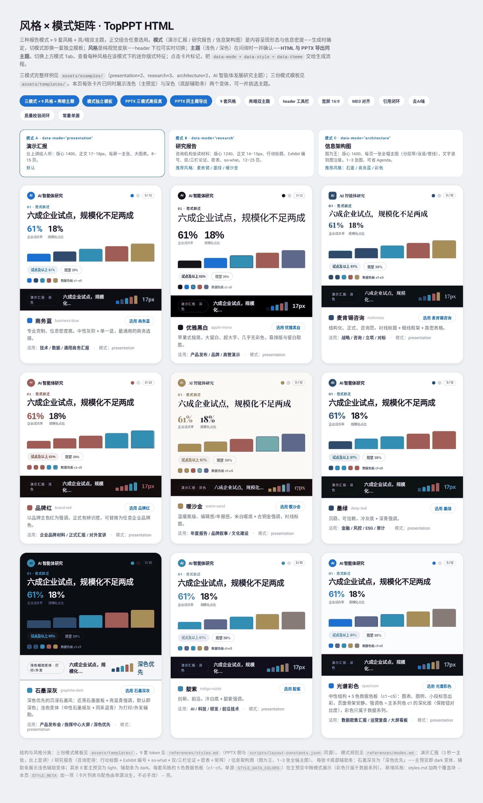
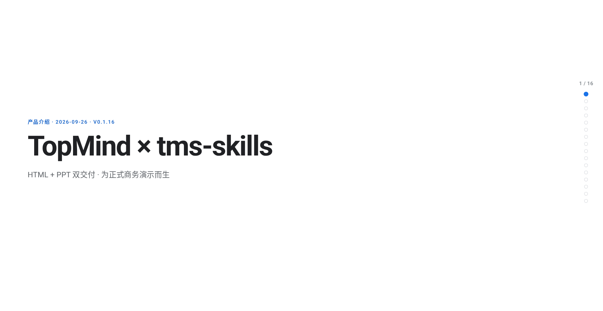
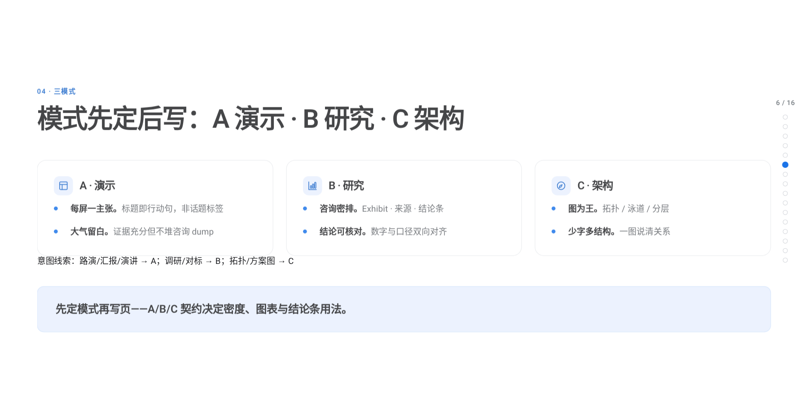
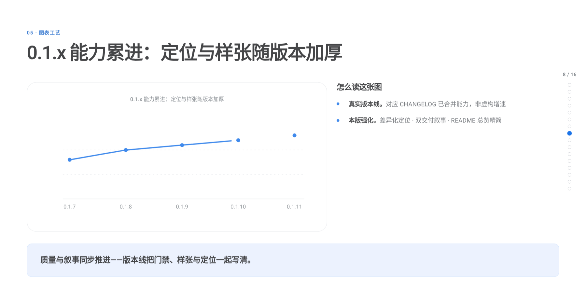

Topmind Presentation
技能名 topmind-presentation。三种成稿：台上讲的演示、研究报告、架构说明。打开的是可翻页 HTML，要改版式时再导出可编辑 PPTX。九套风格在同一份文件里切换。
安装
npm install @topmindspace/topmind-presentation默认风格

样张



技能名 topmind-presentation。三种成稿：台上讲的演示、研究报告、架构说明。打开的是可翻页 HTML，要改版式时再导出可编辑 PPTX。九套风格在同一份文件里切换。
安装
npm install @topmindspace/topmind-presentation


